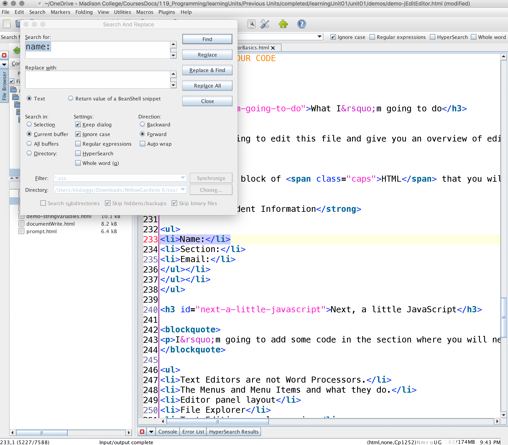
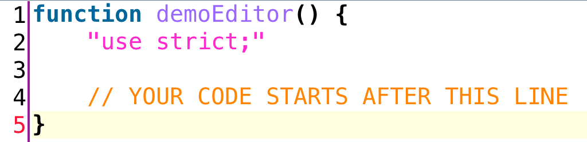
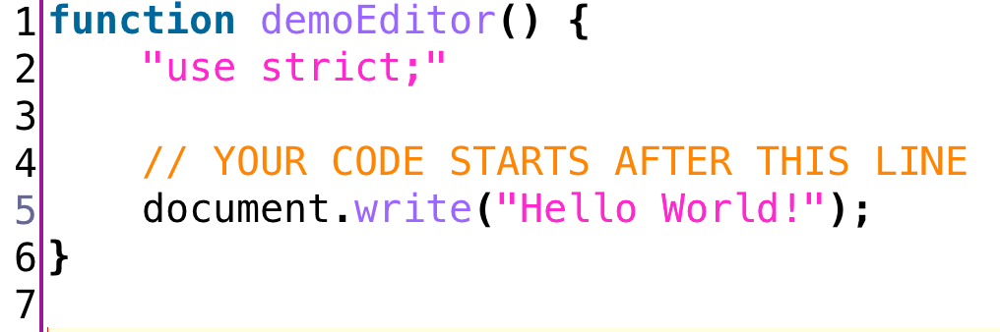

I’m going to edit this file and give you an overview of typing code in a text editor. I’ll add some JavaScript code, edit some HTML, and look at some of the features of the editor. Feel free to following along with me.
First, type your name
All labs, exercises, and projects have a section in the HTML file where you need to type your name, section, and email.
<section class="studentInfo">
<h2>Student Information:</h2>
<ul>
<li>Name:</li>
<li>Section:</li>
<li>Email:</li>
</ul>
</section>How to find where to type
Finding this section of code in the large HTML file can be challenging at first. Here’s a shortcut!
- Use the keyboard shortcut
CTRL+fto open the search pane (see image below). - In the
Find in current bufferfield, typename:(include the colon).- Make sure the “Ignore case” checkbox is checked
- This will bring you directly to the correct location.
- Next, type in your name, section, and email.
- Use the keyboard shortcut
CTRL+Sto save the file. - Refresh your browser,
F5, to see your changes!

Then, find the JavaScript file and function
Now, I need to locate a special location where my JavaScript will go. It’s important that the JavaScript is typed in the correct place, or it won’t work.
- Locate the
.jsfile in thejsdirectory. This is a special type of file that will hold all your JavaScript code. The correct.jsfile will have the same name of the lab, exercise, or project you are working on. - For example, this HTML file is called
text-editor.html. Therefore, you need to locate thetext-editor.jsfile in thejsdirectory. - The JavaScript file will contain the
function(see image below) where you need to write your code. More about functions later, just know for now that you will be typing all your code inside of them. - The orange lines in the image below, signify a JavaScript comment. These are lines ignored by the browser. They have been placed in the function indicating where your code needs to start.

Next, type some JavaScript
Next, I will type some JavaScript in-between the two comments, and refresh my browser for it to run. Notice the Output box below. Right now it is empty, but once I type in the following code, “Hello World!” will appear!
